原文连接:https://www.cnblogs.com/it-carry/p/11833321.html
Hello，各位小伙伴大家好，我是小栈君。好久不见，最近因为工作的缘故，导致了更新变慢，但是小栈君也在积极的做素材的规划，毕竟学习知识点的归纳和提炼需要一定的时间。
所以还请大家多多见谅，下一期的分享主题我们依旧会围绕着go语言系列进行。不过小栈君会尽量加快节奏。因为接下来的挑战是对于最近关乎国家战略有关的区块链。
因为之前有幸参加了相关的一部分项目实战，所以也想对于这一部分做一个简单的教程系列。还请大家敬请期待哦。
闲话不多说，我们今天分享的主题就是最近在项目开发上遇到的一个简单问题总结，就是关于maven私服的上传jar包。因为大家都知道关于java的项目开发经历了换代，小栈君最开始做开发的时候，使用的是最原始的jar包导入。
就是你需要在网上将你项目中所要的jar进行下载，然后放在项目的lib目录下，最后使用eclipse进行build。
这样的坏处就是由于项目过大，或是项目所使用的jar包太多，导致了管理混乱，严重的时候，甚至会影响项目的开发。因为会导致jar冲突，或是项目版本和jar包不符。后面我们就开始使用了maven对项目jar包进行管理。
Maven的介绍

百度百科上对于maven的描述是：maven是可以通过一小段描述信息来管理项目的构建、报告和文档的项目管理工具软件。
它包含了一个项目对象模型 (Project Object Model)，一组标准集合，一个项目生命周期(Project Lifecycle)，一个依赖管理系统(Dependency Management System)，和用来运行定义在生命周期阶段(phase)中插件(plugin)目标(goal)的逻辑。
当你使用Maven的时候，你用一个明确定义的项目对象模型来描述你的项目，然后Maven可以应用横切的逻辑，这些逻辑来自一组共享的（或者自定义的）插件。
Maven 有一个生命周期，当你运行 mvn install 的时候被调用。这条命令告诉 Maven 执行一系列的有序的步骤，直到到达你指定的生命周期。
遍历生命周期旅途中的一个影响就是，Maven 运行了许多默认的插件目标，这些目标完成了像编译和创建一个 JAR 文件这样的工作。
Maven的好处
使用maven的好处当然是有很多的，第一个可以更加方便的管理项目的依赖。
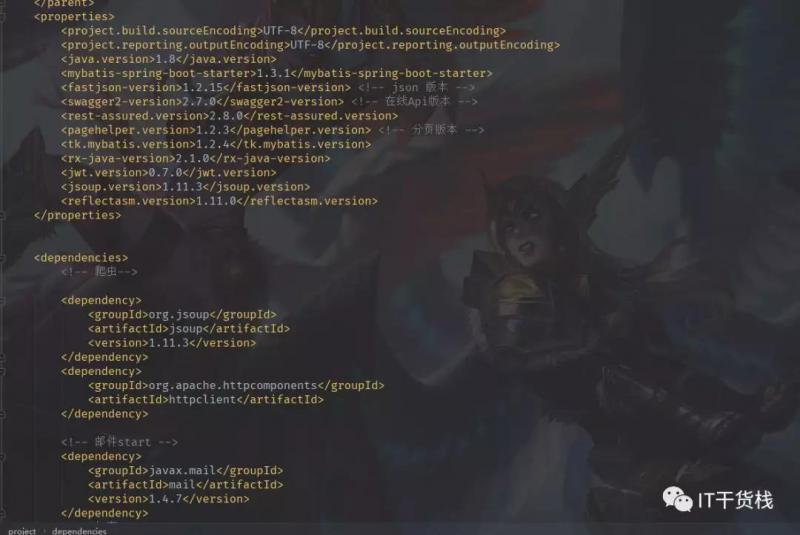
所有的jar包管理上图所示，一目了然，而且版本和注释都可以写清楚，让开发者更加直观、明了的了解到项目所用到的jar包和版本。
其次就是使用maven后可以结合jenkins可以实现一键部署，省去了中间烦恼，想比与之前的本地打包，然后上传服务器，接着备份和停服务，最后重启的繁琐步骤，maven的使用可以算的上真正的为我们开发者节约了不少的时间，提升我们的开发效率。
最后就是在大型项目的开发过程中，特别是现在很火的微服务构建中，利用maven可以最大程度的帮助我们进行模块的划分和复用。有过手动导包开发的小伙伴们更加能够体会到这其中的变化巨大吧。
Maven的安装
Maven的安装可以算的上是非常简单的了，简单来讲的话可以分为三步走 。
第一步进行下载maven，大家可以通过官网进行下载最新的maven包。
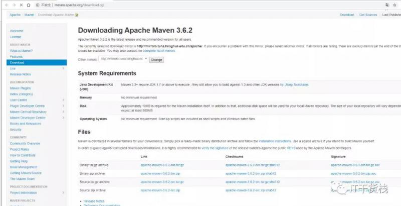
最新的记录是3.6.2，在需要jdk 环境的说明中有写到，需要1.7以上的版本，而且官网也提供了编译好的包和源码包供大家下载使用。
第二步就是配置环境变量
其实maven的环境变量非常简单，首先我们看到下载好的maven项目内部是这个样子的。
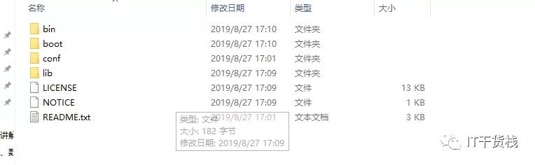
然后建立一个maven_home
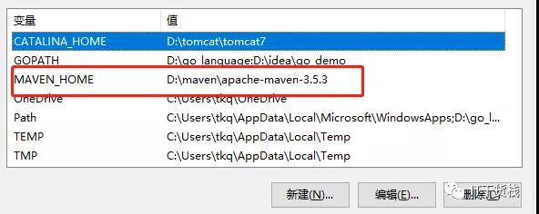
最后在我们的path里添加相应的bin文件路径位置即可。
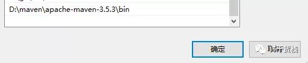
第三步就是验证 ，使用命令mvn -v 即可
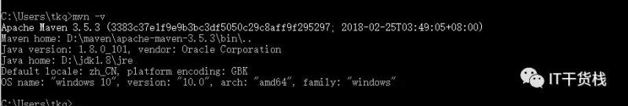
最后提醒大家一点的就是maven的默认仓库是在C盘，如果需要改变的话，只需要修改settings文件的位置即可。
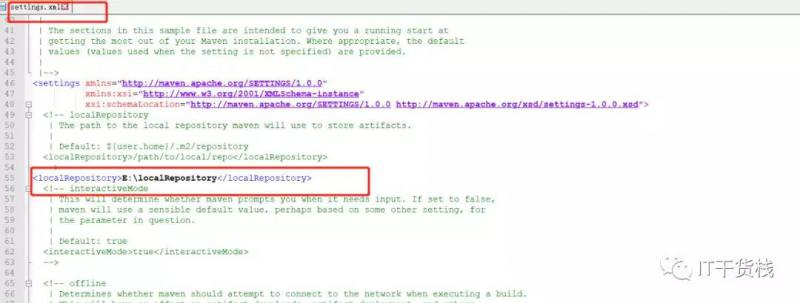
Maven上传到私服
Maven的仓库主要分为三种，第一种就是本地仓库，第二种就是公司私服，第三种就是远程仓库。一般来讲，如果是自己开发，我们只需要使用远程镜像，就可以将远程仓库中的jar包下载到自己的本地仓库。
然后进行使用，但是我们公司有专门的私服。所以我们有时候就需要将某一部分共用代码打成jar放到私服，以便于大家使用。所以小栈君在这里使用三种方式来给大家进行分享。
第一种方式当然是我们最简单的可视化界面 。这个时候我们只需要问一下运维或是管理服务器的人员，给我们私服的一个账号密码和地址即可。
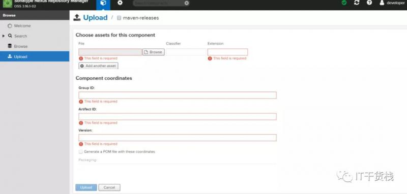
如图所示，我们只需要将我们打好的jar包上传，添加延展性、groupID 、artifactID、版本号然后上传即可。
第二种-通过命令上传
其实网络中有太多的人描述如何上传jar包到私服，但是小栈君试过了，结果显而易见的不得行，当然也不是全部都不行，只是绝大部分不可以。本着负责任的态度。所以小栈君挑选了一个正反例子给大家进行示范，当然有可能只是我不行，也可能是哪一步做错了导致不行。
mvn deploy:deploy-file -Dfile=文件的位置 -DgroupId=文件groupID -Dversion=文件的版本号 -Dpackaging=jar -Durl=http://ip地址/nexus/content/repositories/releases -DrepositoryId=releases然后得到的结果是这样的。
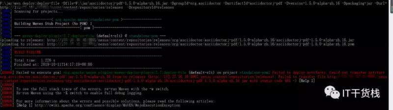
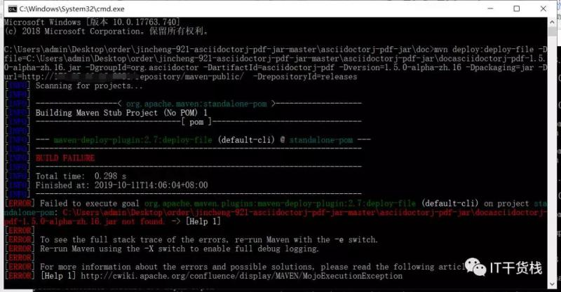
第三种也是命令的形式
这种方式经过小栈君的实测比较可靠(举例说明)，命令如下：
mvn install:install-file -Dfile=D:\\asciidoctorj-pdf-1.5.0-alpha-zh.16.jar -DgroupId=org.asciidoctor -DartifactId=asciidoctorj-pdf -Dversion=1.5.0-alpha-zh.16 -Dpackaging=jar注意一下：这样做的前提条件是屏蔽掉你所有的镜像
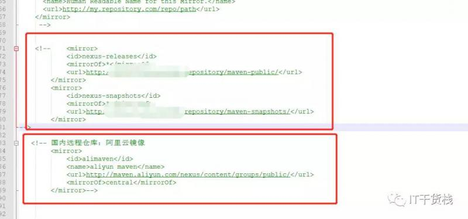
然后执行命令 maven install命令
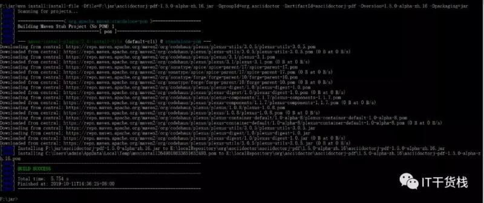
大功告成，又可以美滋滋的继续编写程序啦~。
好了，今天的分享就到这啦，如果你喜欢我的分享，麻烦你点击一个好看或赞，我是小栈君，不定期分享IT干货，包括但不限于区块链、大数据、Python、go、等系列专题。希望与你共同成长。我们下期再见啦，拜了个拜~ ，欢迎大家关注哦~

本文由博客一文多发平台 OpenWrite 发布！